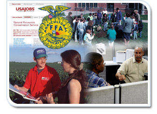

We could try to attend every job fair across the country, participate in every community event for areas that we serve, and go to every school to talk about NRCS. However, even if we spent the time, energy, and money to do it all, we still might not find any more qualified candidates than if we focused our recruiting efforts.
Focusing recruiting efforts provide many benefits, but the most explicit benefit is the ability to recruit candidates that match the needs of the agency in the most cost-effective and efficient manner possible. Targeted recruiting efforts that focus on reaching specific populations will yield a steady pipeline of well-qualified, diverse applicants who fit with the agency and positions we have to offer.
Such efforts should focus on providing information about the mission of the agency, as well as the nature of our positions, to allow candidates to make informed decisions about their fit with the agency.